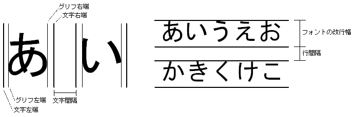

#include <nnsys/g2d/g2d_TextCanvas.h>
void NNS_G2dTextCanvasInit(
NNSG2dTextCanvas* pTxn,
const NNSG2dCharCanvas* pCC,
const NNSG2dFont* pFont,
int hSpace,
int vSpace
);
| pTxn | [OUT] 構築する TextCanvas へのポインタ |
| pCC | [IN] 構築済み CharCanvas へのポインタ |
| pFont | [IN] 構築済み フォント へのポインタ |
| hSpace | [IN] 文字間隔 (ピクセル単位) |
| vSpace | [IN] 行間隔 (ピクセル単位) |
なし。
NNS_G2dTextCanvasInit 構造体を初期化します。
pCC には文字の描画先となる CharCanvas を指定します。 TextCanvas への文字列描画は最終的に pCC への文字描画となります。
pFont には文字の描画に用いるフォントを指定します。
文字間隔 hSpace は前の文字の右端から次の文字の左端までの距離です。 グリフの左右には文字毎に定義される空白部分が存在するため 文字の左右端とグリフの左右端は必ずしも一致しません（下図左）。
行間隔 vSpace は前の行の下端から次の行の上端までの距離です。
1行の上端から下端までの高さにはフォントが持つ改行幅が使われるため
フォントの改行幅によっては見た目の行の高さと一致しない場合があります。
（前の行の上端から次の行の上端までの距離）＝（フォントの改行幅＋行間隔） が成り立ちます（下図右）。

2005/09/29 引数のIN/OUT表示を修正
2005/05/25 初版